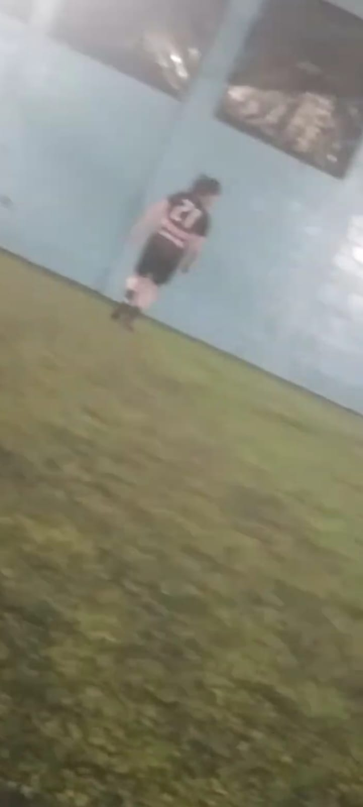
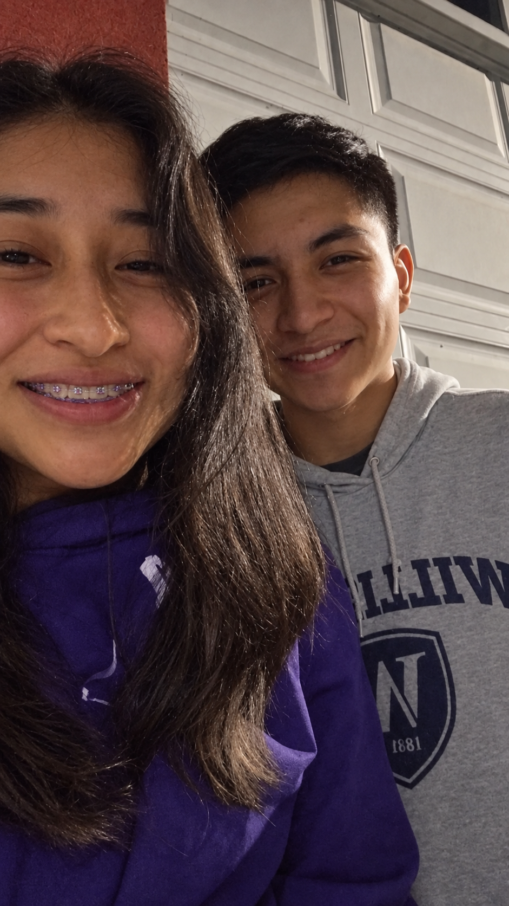
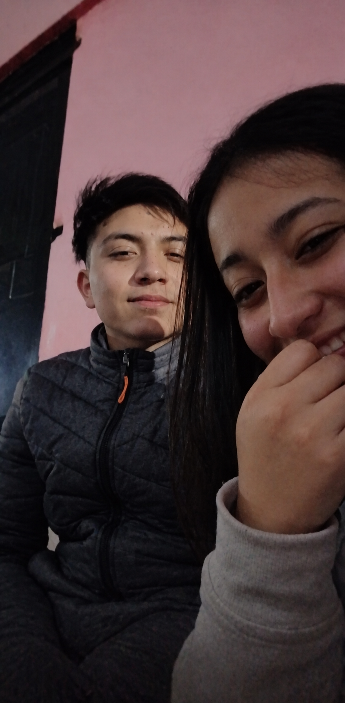
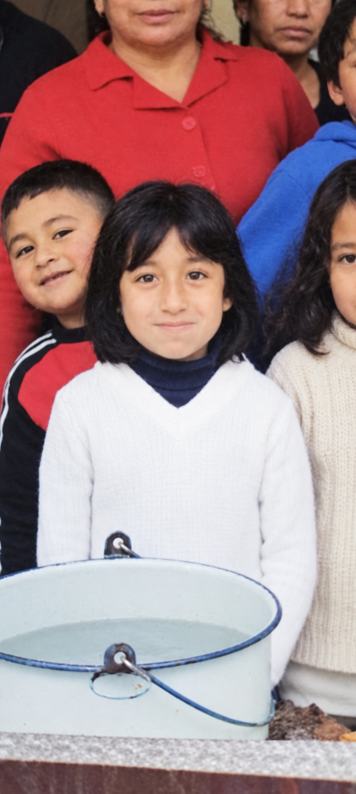

El día que te vi

Cómo olvidar aquel día en que vi a la niña más hermosa del mundo haciendo magia en el deporte que amo.
Una historia escrita para siempre
Hice esto porque hay sentimientos que no caben en un mensaje y recuerdos que merecen un lugar especial.
Abrir nuestra historia ♥Y todavía siento que esto apenas comienza.

Cómo olvidar aquel día en que vi a la niña más hermosa del mundo haciendo magia en el deporte que amo.

Salimos, estaba nervioso, pero ese momento se convirtió en una de las primeras páginas de algo mucho más bonito.
La fecha que guardo en el corazón: el día en que nuestra historia tomó nombre y elegimos caminar juntos.

Nuestra primera Navidad juntos: entre sonrisas, nervios y la emoción de comenzar a compartir fechas especiales. Fue la primera de muchas Navidades que quiero seguir viviendo contigo.

“Quiero hacer feliz a esta niña y cuidar siempre la ilusión que vive en su corazón.”La niña que un día fuiste
“Y quiero recordarle a esta mujer lo hermosa, valiosa e importante que es para mí.”La mujer que amo hoy
Julión Álvarez y su Norteño Banda
Porque hay canciones que dejan de ser solo canciones y se convierten en un pedacito de nosotros.
Escuchar nuestra canción ♪Han pasado tres años y diez meses desde que comenzamos esta historia, pero cada vez que vuelvo a la cancha donde te conocí, pienso en todo lo que nació desde el instante en que te vi jugar fútbol.
Desde entonces has llenado mi vida de momentos que no cambiaría por nada: nuestras salidas, nuestras Navidades, tus comidas, tus locuras, tus besos y hasta esos días comunes que, por estar contigo, terminan siendo especiales.
Amo tus ojos, tu sonrisa y cada detalle de ti. Pero, sobre todo, amo tu compañía: la tranquilidad de saber que puedo compartir contigo mis alegrías, mis planes y también mis días difíciles.
Gracias por estos años, por quererme y por construir conmigo tantos recuerdos. No quiero que esto sea solamente una celebración de lo que ya vivimos, sino una promesa de todo lo que todavía deseo vivir a tu lado.
Si pudiera regresar a aquel día de julio de 2022, volvería a mirarte exactamente igual, solo que esta vez sabría que estaba frente a una de las personas más importantes de mi vida.
Te amo; eres mi todo, mi amor. Feliz tres años y diez meses para nosotros.
Siempre tuyo,
Tu Machorro ♥